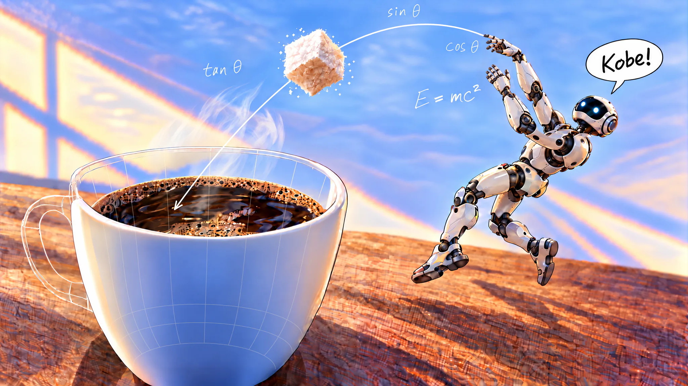
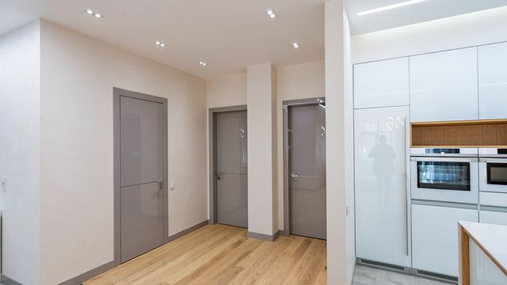
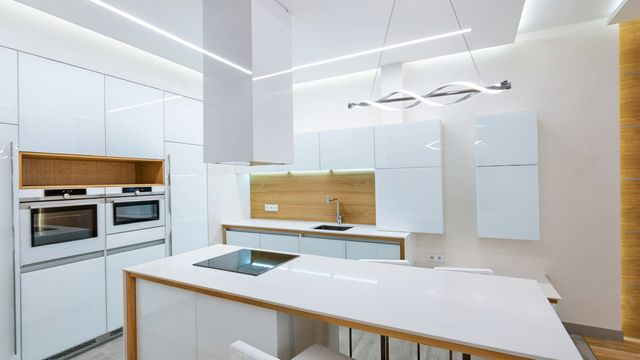
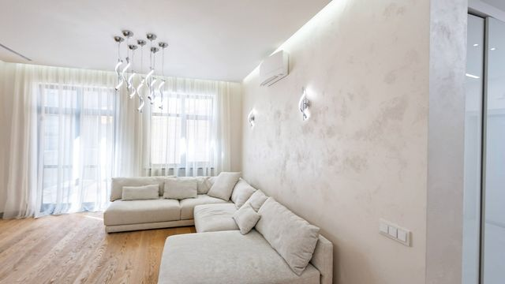
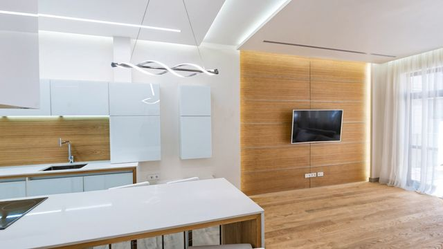
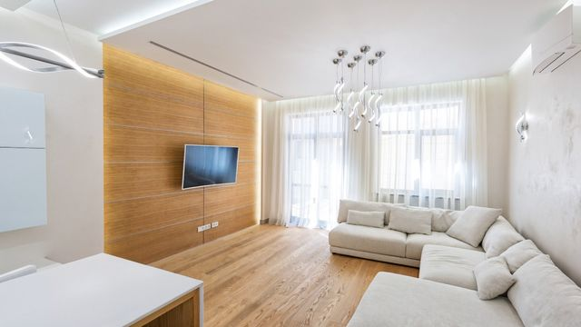

Intro to World Models and Robot Grandmas

My team recently won second place in a World Labs sponsored Spatial Intelligence hackathon hosted at the Founders Inc campus, where we built Save The Grannies Simulation using World Labs’ Marble model to generate a photorealistic robotics simulation. This is a basic intro that I hope will be helpful for others who are interested in the topic, covering some relevant concepts and a brief walkthrough of how to use Marble to build simulations.
What is a World Model?
First of all, I’m sure many of you have heard of world models being mentioned more and more recently, here are some extracted remarks from Fei Fei Li’s essay about that term:
Here, the World Labs team and I want to go one level deeper: of the many things now being built and called ‘world models,’ which functional pieces actually compose that capacity [?]
…
That makes “world model” one of the most important and most overloaded terms in AI today. Computer vision, robotics, reinforcement learning, and generative AI each claim to be building world models, and each means something quite different.
Basically, a lot of people are saying they are building world models but what exactly goes in and comes out of such a model can vary. The essay does a great job at summarizing them into three categories: Renderers, Simulators, and Planners. It also mentions how the lines are starting to blur as the direction of things are starting to converge. If you have time, I highly recommend reading the full essay from World Labs.
While you can use those categories as a mental compass, fundamentally the goal of a world model is about understanding how the physical world works. My personal favorite explanation is to think about a human’s intuitive understanding of space and time, like how we roughly know what the backside of a cup or a bottle looks like even without touching it and turning it around. Or we have a good sense of roughly the path and trajectory of a flying object when someone throws something and shouts “Kobe!”.
Marble
So what is Marble? It’s a model that can take a variety of inputs such as images, text, videos, or a rough 3D draft to help you generate high quality 3D scenes that can be used for simulations. In this case, we want to give it images of an apartment to generate Gaussian splats and collider meshes which we will use later.
Here’s an example of an output from using Marble:





As you can see, the initial outputs are not perfect and one thing to note about the current version of Marble is that a given scene is constructed from a 360° panorama image of the space. This means a panorama is either generated from a combination of multiple images, expanded from a single image with text prompts, or just pure text based. With how it currently works, to have larger or connected spaces, you generally need to stitch multiple scenes together or “expand” an existing one (via World Labs tools) generatively.
Because the scene is generated from a panorama, certain viewing angles will look blurry where the model is less confident as those areas may have been blocked or is too far and that will require further steps to fix. However, there were mentions that their new Atlas model will be used to power the next generation of Marble which I believe will make the process of generating larger scenes more interesting and hopefully easier. Atlas is still in early access at this time, but seems like it’s a different approach without those panorama-based limitations.
Gaussian Splats
Gaussian splats are the key component that gives the scene the high quality and high fidelity look. They are basically a ton of tiny colored “blobs” or “Gaussians” that kind of blend together to create a photorealistic 3D reconstruction. The word Gaussian is in the name because each point or blob is defined using variables similar to how we define bell curves or multivariate Normal/Gaussian distributions which are used here to describe the shape of the blob in 3D.
This is one Gaussian splat: a soft, see-through “blob” of color. Drag to turn it, and try the shapes:
As you can see from the visualization above, they can have interesting properties such as different colors depending on the angle of viewing. Also, they have soft edges and different blobs can have varying transparency so they blend really well together in a way that makes them great at displaying certain types of details such as fuzzy fur which can be a struggle for common digital representations that use triangles with hard edges. This is part of why they are really good at photorealistic 3D reconstruction.
Here’s a sleeping cat scene made of 400,000 of these blobs.1 Shrink them to see the individual points more clearly.
If you didn’t notice it earlier in the visualization above, try looking under the cat and you will notice that it looks as if the cat is hollow and doesn’t have a belly or underside even though from the front the cat looks convincingly 3D. This is because this particular Gaussian splat is made using the classic method based on the popular 3D Gaussian Splatting paper that focuses on 3D reconstruction from reference 2D images.
One of the goals of world models such as Marble is to attempt to learn a latent representation and understanding of the world, using generative approaches to fill in gaps that purely reconstructive methods might miss or to create entirely new scenes.
If you’re interested in learning more about Gaussian Splats in general, I recommend looking up the 3D Gaussian Splatting (3DGS) paper and relevant topics such as Neural Radiance Fields (NeRF).
Collider Mesh
Marble is able to output two kinds of meshes for a given scene, a collider mesh or a high quality mesh (the HQ mesh can take quite a bit of time generate, maybe an hour from some of my runs). For the purposes of running simulations, the collider mesh is useful since it has simpler surface shapes using less triangles and is lighter for physics calculations.
But as you can see, depending on the visible angles within the input, the initial outputs can be messy and you might need to clean things up before using them. Also, another thing to note about the generated meshes is that they don’t isolate individual objects in a scene and that means you may need to do additional work to “lift” objects from a scene, if you want them to be separate individual entities that you can add interactivity or additional logic to.
Adding Robots
So the next step is to take these outputs from World Labs and turn them into something you can use for robotics simulation. Here, we choose to use Three.js as the rendering engine which means we can leverage SparkJS built by World Labs to load the Gaussian splats quickly and efficiently. This also means we can pull in MuJoCo which is compatible with Three.js and allows us to add a physics engine for our robot.
Afterwards, we can import an open-source robot 3D model, such as the Unitree G1 humanoid robot. To control it’s movement, we can use their existing MuJoCo compatible locomotion policy which is a small neural network that you can fine tune, or train one from scratch using reinforcement learning. The robot can interact with the collider mesh so it knows where the floor and walls are, as well as anything else you add to the scene.
All that combined plus some cleaning up and a sprinkle of coding agent magic should give you something like this:
Okay it was actually more than a sprinkle, if people are interested in learning more, let me know and that might convince me to write a part 2 (non-slop writing is hard!). Topics may include my workflow for improving the generated scenes and how I used reinforcement learning to teach a robot to walk like a grandma. You can also follow me on Twitter/X @seanteyyy!
Thinking about the future
World models such as Marble makes it relatively easy to quickly create prototype scenes that can be photorealistic for robotics simulation or 3D related work. As the models get better, it will be really interesting to see how it can enable practical and creative works that used to be too difficult or expensive to build. There’s still a lot of room for improvements though, especially if you look closer at the details of the current output, but I am excited for Atlas and the next generation of world models!
Speaking of Atlas, it is described as a “multimodal autoregressive diffusion transformer”, which if you squint and not look too deeply at the details, it kind of sounds like a diffusion LLM. Feels like a lot of lines are getting blurry as both language and world models continue to evolve and more ideas start to converge.
Acknowledgements
Shoutout to my teammates Hai Bui and Katherine Wang!
And thank you to organizers and sponsors: Mint.gg, World Labs, Tripo, Convex, and also Founders Inc for the space.
Assets & Tools
- “Kitty” by Andrej Kurcik, CC BY 4.0. Compressed and modified for web.
- Apartment world is based on photos by Max Vakhtbovych.
- Unitree G1 robot model by Unitree Robotics.
- Built with World Labs Marble, Three.js, SparkJS and MuJoCo.
References
Footnotes
“Kitty” by Andrej Kurcik↩︎